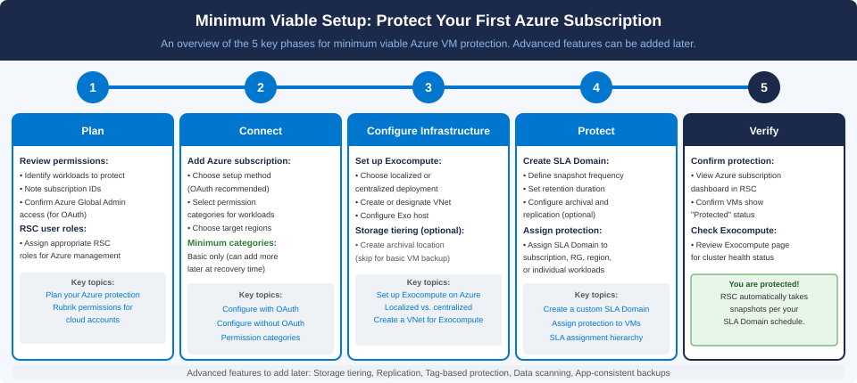

Protecting your first Azure subscription
Set up basic Azure virtual machine protection in RSC by completing the minimum required configuration. You can add advanced features such as storage tiering, replication, tag-based protection, and data scanning after basic protection is confirmed.
Before you begin
Confirm the following:
- You have an active RSC account.
- You have an Azure subscription with virtual machines you want to protect.
- You have Azure Global Administrator privileges in Microsoft Entra ID. This
privilege is required for the
Configure with OAuthsetup method. - You have the RSC Administrator or Cloud Admin role assigned in RSC.
About this task
This topic covers the minimum configuration required to protect Azure virtual
machines. It uses the Configure with OAuth method and a localized
Exocompute deployment. For advanced configurations including manual networking,
centralized Exocompute, SQL workloads, or Azure Blob Storage protection, see Azure protection implementation workflow.

Procedure
-
Review the permissions that RSC requires and assign appropriate
RSC roles to your team members.
For more information, see Plan your Azure protection and Required RSC permissions for Azure cloud accounts.
-
Add your Azure subscription to RSC using the Configure with
OAuth method.
Select the
Basicpermission category as a minimum. You can add additional permission categories later when specific recovery operations require them. For more information, see Creating Azure cloud accounts with OAuth. -
Configure Exocompute using the automated networking setup.
Leave the Automated networking setup permission category selected (the default). RSC automatically provisions the required VNet, subnet, and security rules. For more information, see Configuring Exocompute for Rubrik-managed clusters.
-
Create an SLA Domain to define your backup schedule and retention
settings.
Define snapshot frequency, retention duration, and any archiving or replication requirements for your Azure virtual machines. For more information, see Creating a custom SLA Domain.
-
Assign the SLA Domain to your Azure subscription, resource group, or
individual virtual machines.
Assigning at the subscription level automatically protects all virtual machines in the subscription, including newly provisioned ones. For more information, see Assigning protection to Azure virtual machines or managed disks or Assigning protection to Azure subscriptions or resource groups.
-
Verify that RSC shows your virtual machines as
protected.
In RSC, navigate to your Azure subscription and confirm that virtual machines display a Protected status and that the Exocompute health check passes. For more information, see Viewing the Exocompute on Azure details page and Viewing Azure protected objects.RSC displays the protected virtual machines with their assigned SLA Domain and the next scheduled snapshot time.
-
Validate recovery by performing a test on-demand snapshot.
Take an on-demand snapshot and confirm it completes successfully. Optionally, perform a test file recovery to verify end-to-end recovery capability before relying on the protection in a real incident. For more information, see Taking an on-demand snapshot for Azure VMs or managed disks and Recover Azure workloads.
Results
What to do next
After basic protection is working, consider adding the following features:
- Storage tiering to Azure archival locations or Rubrik Cloud Vault for long-term retention. For more information, see Set up Azure storage tiering.
- Tag-based protection to automatically protect newly provisioned workloads based on Azure tags. For more information, see Tag-based protection for Azure workloads.
- Azure SQL Database and SQL Managed Instance protection. See Manage Azure SQL Database.
- Azure Blob Storage protection. For more information, see Manage Azure Blob Storage.
- Data scanning to classify sensitive data in your Azure workloads. For more information, see Enabling Data scanning for Azure cloud accounts.